Competitive robotics platform featuring custom hardware and ESP32 machine vision
Working in a four-person team, I helped engineer a fully autonomous robotics platform designed to navigate a competitive Mars surface simulation. The objective was to traverse rough terrain, detect specific target beacons, and physically interact with objects on the field without any human intervention. The project required seamless integration across mechanical design, custom multi-board electrical routing, and object-oriented C++ control software.
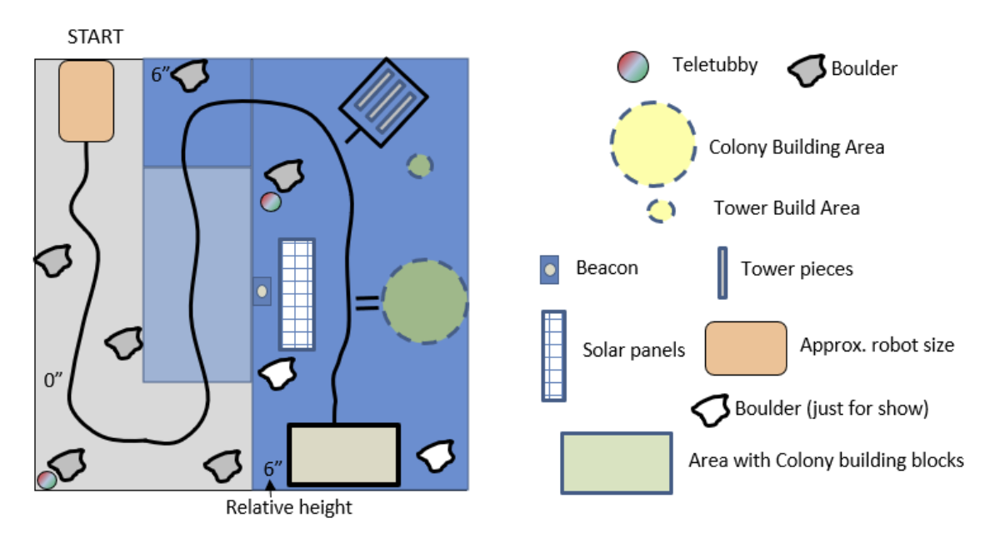
Mars Surface Simulation Field
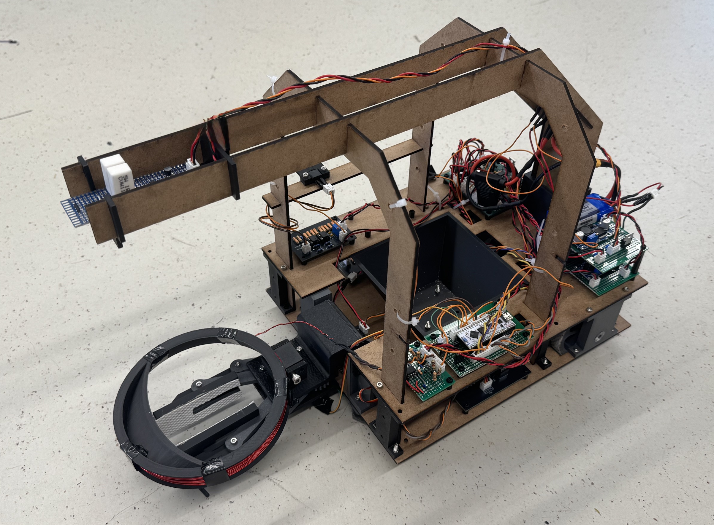
Final Assembled Robotics Platform
The mechanical chassis was designed to balance weight, durability, and modularity. We engineered the frame and mounting mechanisms in CAD, allowing for easy access to the electronics bay and secure placement of the mechanical claw, sensors, and drive motors. The robust drivetrain ensured the robot could smoothly navigate the uneven simulation surface while maintaining sensor alignment.
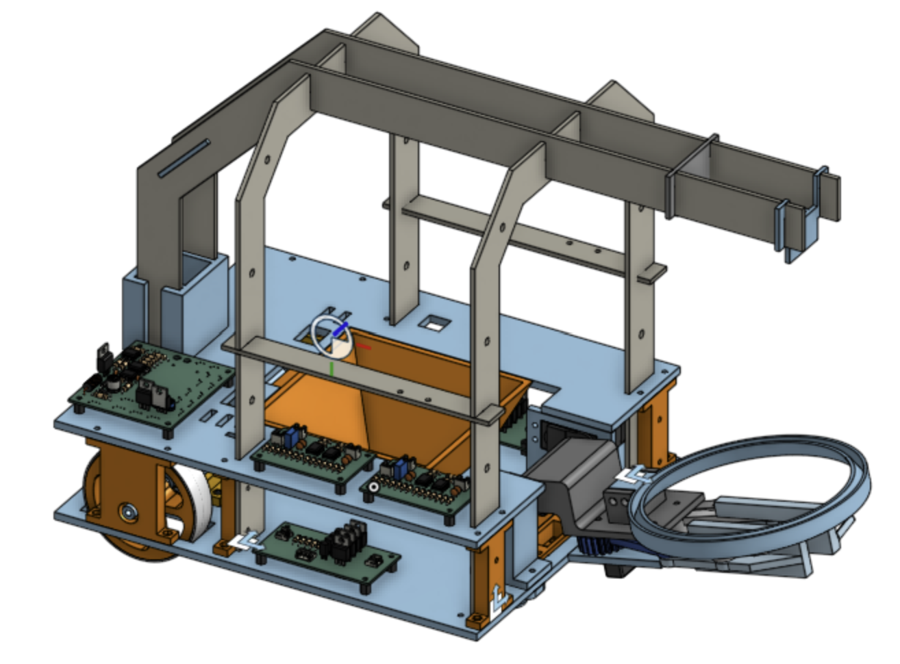
Mechanical Chassis CAD Assembly
I designed a suite of custom application-specific circuit boards to handle power delivery, motor actuation, and analog signal conditioning.
Engineered a multi-rail power distribution PCB to manage the robot's various voltage requirements. The board steps the main battery supply into a 21V boost rail, a 7V buck converter, and 5V/3.3V linear regulators to safely isolate sensitive logic levels from high-current actuator draw.
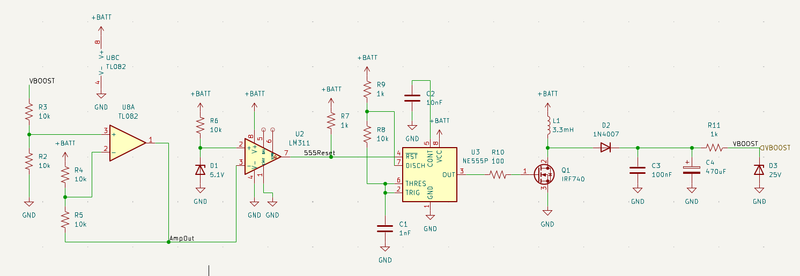
Schematic
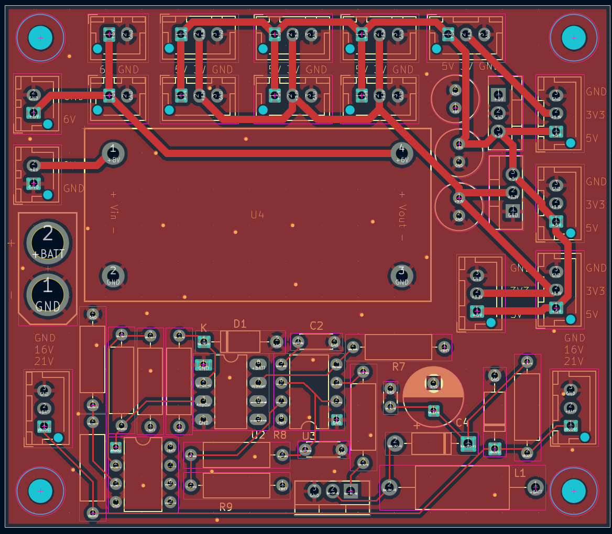
PCB Layout
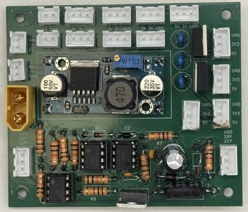
Physical Board
Designed a dedicated H-Bridge PCB to enable bi-directional motor control for the drivetrain. The layout prioritizes thermal dissipation and wide trace routing to handle sustained current loads during complex navigation maneuvers.
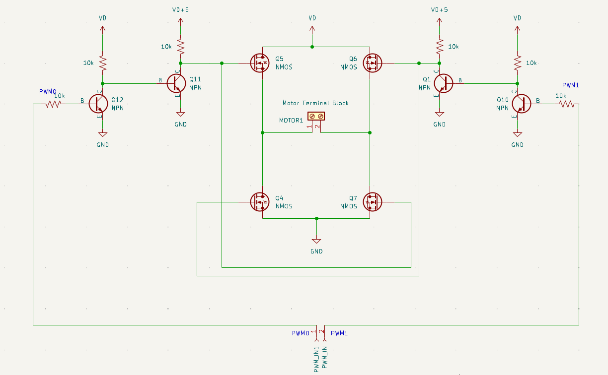
Schematic
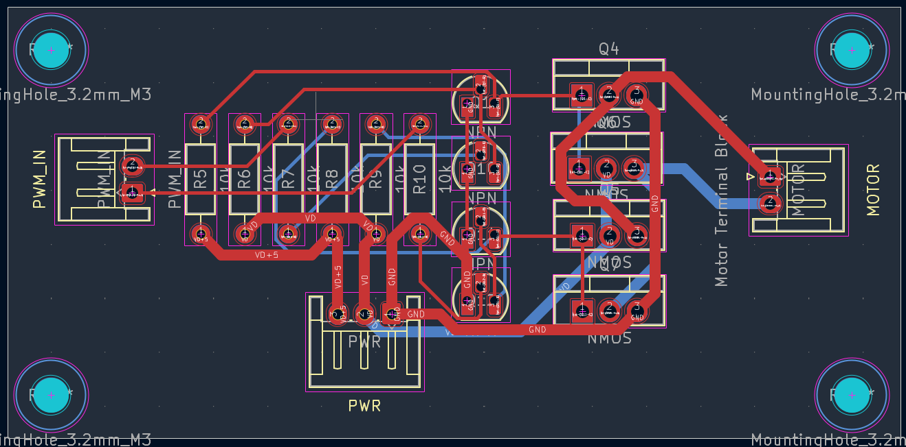
PCB Layout
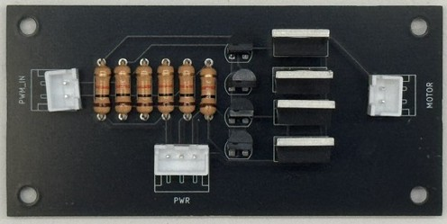
Physical Board
Developed a custom analog filter PCB specifically optimized for 10kHz infrared beacon detection. This hardware-level band-pass filtering isolates the target beacon signal from ambient light interference, drastically improving the robot's tracking reliability.
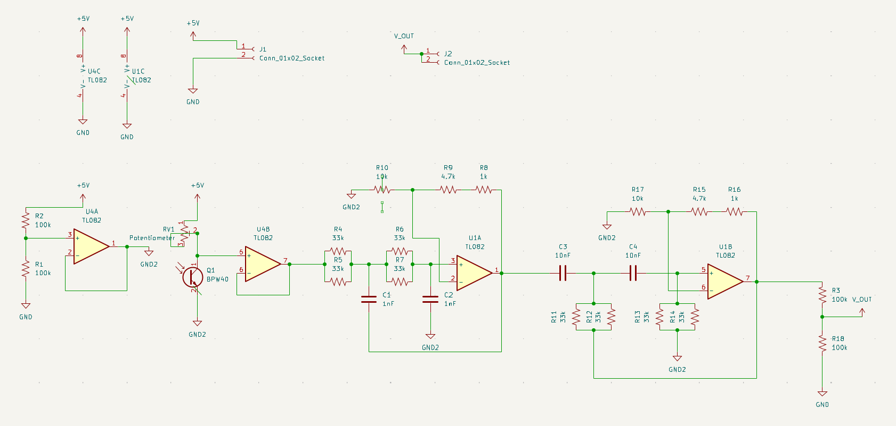
Schematic
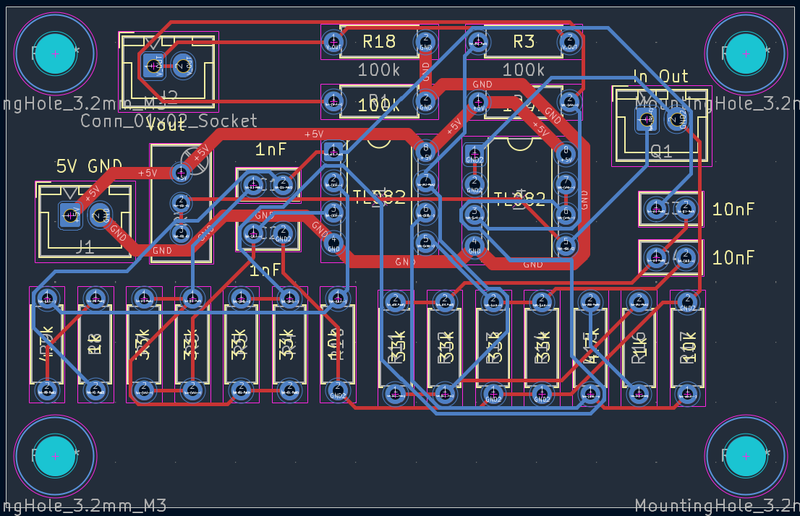
PCB Layout
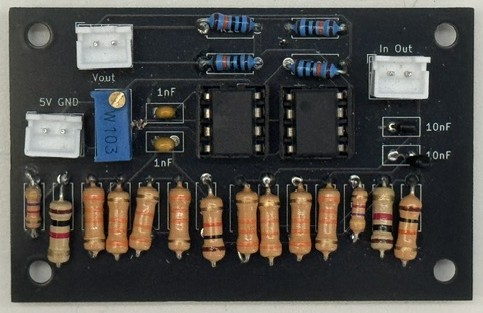
Physical Board
Built a custom metal detection circuit to identify specific subsurface targets during the simulation. Because this required rapid iteration and tuning, I elected to build this on a protoboard rather than a rigid PCB, allowing for quick component swapping during the testing phase.
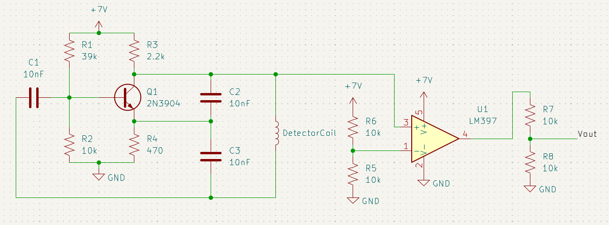
Schematic
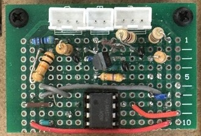
Physical Protoboard
Implemented an AI machine vision model using an ESP32-CAM module. This setup handled real-time image processing for high-accuracy object detection, allowing the robot to visually verify targets before initiating its grasping sequence.
Engineered Proportional-Derivative (PD) control loops to manage the robot's navigation and motor actuation. By constantly calculating and adjusting for positional error, the drivetrain maintained smooth, predictable line-following and turning behavior.
Developed the core firmware using object-oriented C++ on an ESP32 microcontroller. The software architecture heavily utilized state machines to safely transition the robot between searching, tracking, grasping, and fault-handling states.